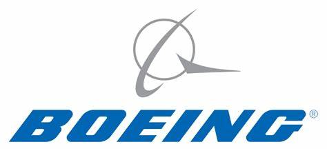
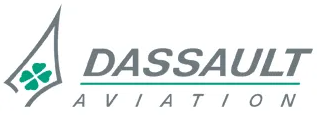

|
飞机起源 | 飞机结构 | 飞行原理 | 飞机分类 | 世界主要飞机供应商 |
|
||
波音波音公司（TheBoeingCompany）是美国一家开发及生产飞机的公司，总部设于伊利诺伊州芝加哥， 在航空业上拥有颇高的占有率。波音公司是全球航空航天业的领袖公司，也是世界上最大的民用 和军用飞机制造商。 |
||
空客空中客车公司（AirbusS.A.S.），是欧洲一家民航飞机制造公司，于1970年由德国、法国、西班牙 与英国共同创立，总部设于法国图卢兹。空中客车公司是欧洲最大的军火供应制造商空中客车集团（AirbusGroup） 旗下企业。空中客车的生产线是从A300型号开始的，它是世界上第一个双通道、双引擎的飞机，比A300更短的变型被称为A310。 空中客车在A320型号上应用了创新的电控飞行操作（fly-by-wire）控制系统。 |
||
联合航空制造公司联合航空制造公司（简称OAK）是俄罗斯联邦于2006年2月整合包括苏霍伊航空集团、俄罗斯米格航空器集团、 图波列夫公司、别里耶夫航空器集团、伊尔库特公司、伊留申航空集团、雅科航空器集团，以及位在乌 兹别克斯坦境内的瓦列里·契卡洛夫塔什干航空制造联合体（TAPO）等主要航天、航空器设计或制造公司而组 成的合股公司，主要股东为俄罗斯政府。 |
||
洛克希德洛克希德·马丁公司，全称洛克希德·马丁空间系统公司。 前身是洛克西德公司（Lockheed Corporation），创建于1912年，是一家美国航空航天制造商。 公司在1995年与马丁·玛丽埃塔公司合并，并更名为洛克希德·马丁公司。洛克希德·马丁公司的总部位于马里兰州蒙哥马利县的贝塞斯达。 目前洛克希德公司是全世界在营业额上最大的国防工业承包商，其核心业务是航空、电子、信息技术、航天系统和导弹，占据美国防部每年采购预算1/3的订货， 控制了40%的世界防务市场，几乎包揽了美国所有军用卫星的生产和发射业务，成为世界级军火“巨头”。 |
||
达索达索航空是法国的一家军用航空和商用机制造商，附属于达索集团。主要研制战斗机，经济效益较高，人均销售额居美、 欧各航空企业之上。达索航空公司研制生产的“幻影”系列战斗机在世界上享有一定声誉，已发展成20多个型别，其中 “幻影”3型、“幻影”5型和“幻影”50型已在20多个国家的空军中使用。它还生产“军旗”、“超军旗”舰载战斗机，“阿 尔发喷气”和“美洲虎”攻击-教练机和“大西洋”反潜机。民用的“隼”式多用途公务机已出口到40多个国家。 |
||
英国宇航公司英国宇航公司BritishAerospaceCorporation，英国最大的航空制造企业， 西欧最大的航空制造企业。1963年成立，1990年英国宇航公司拥有资产179.17亿美元。总 部在伦敦。英国最大的航空航天企业和最大的导弹制造企业。主要从事军用飞机、民用飞机、导弹 、卫星、电子设备、仪表与测试设备以及有关武器系统的研制与生产。几乎垄断 了英国军用飞机、航天器和战术导弹的研制与生产。 |
||